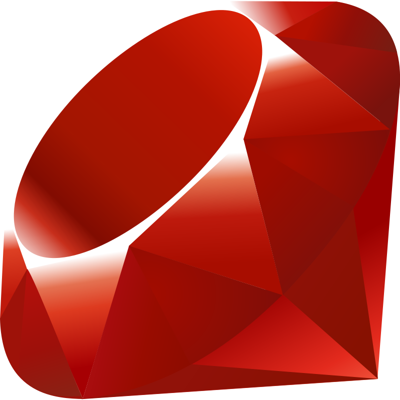

_________________________________________________________________________________________________________________________________________________________________________________
A "Hello, World!" program is generally a computer program that outputs or displays the message "Hello, World!". This program is very simple to write in many programming languages, and is often used to illustrate a language's basic syntax. "Hello, World!" programs are often the first a student learns to write in a given language, and they can also be used as a sanity test to ensure computer software intended to compile or run source code is correctly installed, and that its operator understands how to use it. While small test programs have existed since the development of programmable computers, the tradition of using the phrase "Hello, World!" as a test message was influenced by an example program in the seminal 1978 book The C Programming Language. The example program in that book prints "hello, world", and was inherited from a 1974 Bell Laboratories internal memorandum by Brian Kernighan, Programming in C. Brian Kernighan actually wrote the first "hello, world" program as part of the documentation for the BCPL programming language developed by Martin Richards. BCPL was used while C was being developed at Bell Labs a few years before the publication of Kernighan and Ritchie's C book in 1972.
Ballerina:

Ballerina is an open source general-purpose programming language and platform designed by WSO2 for cloud-era application programmers. It is easy to write and modify and is suitable for application programmers.It is an open source project started in 2015 by architects from WSO2 as a code-based alternative to the configuration-based integration tools such as EAI, ESB, and workflow products. It has various constructs geared toward cloud-native development including support for modern data formats and protocols, reliability, distributed transactions, APIs, and event streams.
BASIC:

BASIC(Beginners' All-purpose Symbolic Instruction Code) is a family of general-purpose, high-level programming languages designed for ease of use. The original version was created by John G. Kemeny and Thomas E. Kurtz at Dartmouth College in 1964. They wanted to enable students in non-scientific fields to use computers. At the time, nearly all computers required writing custom software, which only scientists and mathematicians tended to learn. The emergence of microcomputers in the mid-1970s led to the development of multiple BASIC dialects, including Microsoft BASIC in 1975. Due to the tiny main memory available on these machines, often 4 KB, a variety of Tiny BASIC dialects was also created. BASIC was available for almost any system of the era, and became the de facto programming language for home computer systems that emerged in the late 1970s
Batchfile:
A Batch File is a script file in DOS, OS/2 and Microsoft Windows. It consists of a series of commands to be executed by the command-line interpreter, stored in a plain text file. A batch file may contain any command the interpreter accepts interactively and use constructs that enable conditional branching and looping within the batch file, such as IF, FOR, and GOTO labels. The term "batch" is from batch processing, meaning "non-interactive execution", though a batch file might not process a batch of multiple data.
Bash:

Bash is a Unix shell and command language written by Brian Fox for the GNU Project as a free software replacement for the Bourne shell.First released in 1989,it has been used as the default login shell for most Linux distributions.A version is also available for Windows 10 via the Windows Subsystem for Linux.It is also the default user shell in Solaris 11.Bash was also the default shell in all versions of Apple macOS prior to the 2019 release of macOS Catalina, which changed the default shell to zsh, although Bash remains available as an alternative shell.
C:

C is a general-purpose, procedural computer programming language supporting structured programming, lexical variable scope, and recursion, with a static type system. By design, C provides constructs that map efficiently to typical machine instructions. It has found lasting use in applications previously coded in assembly language. Such applications include operating systems and various application software for computer architectures that range from supercomputers to PLCs and embedded systems. A successor to the programming language B, C was originally developed at Bell Labs by Dennis Ritchie between 1972 and 1973 to construct utilities running on Unix. It was applied to re-implementing the kernel of the Unix operating system.
C++:

C++ is a general-purpose programming language created by Bjarne Stroustrup as an extension of the C programming language, or "C with Classes". The language has expanded significantly over time, and modern C++ now has object-oriented, generic, and functional features in addition to facilities for low-level memory manipulation. It is almost always implemented as a compiled language, and many vendors provide C++ compilers, including the Free Software Foundation, LLVM, Microsoft, Intel, Oracle, and IBM, so it is available on many platforms. It was designed with an orientation toward systems programming and embedded, resource-constrained software and large systems, with performance, efficiency, and flexibility of use as its design highlights.
C#:

C# is a general-purpose, multi-paradigm programming language. C# encompasses static typing, strong typing, lexically scoped, imperative, declarative, functional, generic, object-oriented (class-based), and component-oriented programming disciplines. C# was designed by Anders Hejlsberg from Microsoft in 2000 and was later approved as an international standard by Ecma (ECMA-334) in 2002 and ISO (ISO/IEC 23270) in 2003. Microsoft introduced C# along with .NET Framework and Visual Studio, both of which were closed-source. At the time, Microsoft had no open-source products. Four years later, in 2004, a free and open-source project called Mono began, providing a cross-platform compiler and runtime environment for the C# programming language. A decade later, Microsoft released Visual Studio Code (code editor), Roslyn (compiler), and the unified .NET platform (software framework), all of which support C# and are free, open-source, and cross-platform. Mono also joined Microsoft but was not merged into .NET.

COBAL(an acronym for "common business-oriented language") is a compiled English-like computer programming language designed for business use. It is an imperative, procedural and, since 2002, object-oriented language. COBOL is primarily used in business, finance, and administrative systems for companies and governments. COBOL is still widely used in applications deployed on mainframe computers, such as large-scale batch and transaction processing jobs. However, due to its declining popularity and the retirement of experienced COBOL programmers, programs are being migrated to new platforms, rewritten in modern languages or replaced with software packages. Most programming in COBOL is now purely to maintain existing applications; however, many large financial institutions were still developing new systems in COBOL as late as 2006. COBOL was designed in 1959 by CODASYL and was partly based on the programming language FLOW-MATIC designed by Grace Hopper.

Clojure is a dynamic and functional dialect of the Lisp programming language on the Java platform. Like other Lisp dialects, Clojure treats code as data and has a Lisp macro system. The current development process is community-driven, overseen by Rich Hickey as its benevolent dictator for life (BDFL). Clojure advocates immutability and immutable data structures and encourages programmers to be explicit about managing identity and its states. This focus on programming with immutable values and explicit progression-of-time constructs is intended to facilitate developing more robust, especially concurrent, programs that are simple and fast. While its type system is entirely dynamic, recent efforts have also sought the implementation of a dependent type system.
Dart:

Dart is a programming language designed for client development, such as for the web and mobile apps. It is developed by Google and can also be used to build server and desktop applications. It is an object-oriented, class-based, garbage-collected language with C-style syntax. Dart can compile to either native code or JavaScript. It supports interfaces, mixins, abstract classes, reified generics, and type inference.
Python:
.jpg)
Python is a high-level, general-purpose programming language. Its design philosophy emphasizes code readability with the use of significant indentation. Its language constructs and object-oriented approach aim to help programmers write clear, logical code for small- and large-scale projects. Python is dynamically-typed and garbage-collected. It supports multiple programming paradigms, including structured (particularly procedural), object-oriented and functional programming. It is often described as a "batteries included" language due to its comprehensive standard library. Guido van Rossum began working on Python in the late 1980s as a successor to the ABC programming language and first released it in 1991 as Python 0.9.0. Python 2.0 was released in 2000 and introduced new features such as list comprehensions, cycle-detecting garbage collection, reference counting, and Unicode support. Python 3.0, released in 2008, was a major revision that is not completely backward-compatible with earlier versions. Python 2 was discontinued with version 2.7.18 in 2020.
Zig:

Zig is an imperative, general-purpose, statically typed, compiled system programming language designed by Andrew Kelley. The language is designed for "robustness, optimality and maintainability", supporting compile-time generics and reflection, cross-compilation and manual memory management. A major goal of the language is to improve upon the C language, while also taking inspiration from Rust, among others. Zig has many features for low-level programming, notably: packed structs (structs without padding between fields), arbitrary width integers[12] and multiple pointer types.
TIBASIC:
TI-BASICFor many applications, it is the most convenient way to program any TI calculator, since the capability to write programs in TI-BASIC is built-in. Assembly language (often referred to as "asm") can also be used, and C compilers exist for translation into assembly: TIGCC for Motorola 68000 (68k) based calculators, and SDCC for Zilog Z80 based calculators. However, both of them are cross-compilers, not allowing on-calculator programming. TI-BASIC is considerably slower than the assembly language (because it has to be interpreted), making it better suited to writing programs to quickly solve math problems or perform repetitive tasks, rather than programming games or graphics-intensive applications. Some math instruction books even provide programs in TI-BASIC (usually for the widespread variant used by the TI-82/83/84 series).
JavaScript:

JavaScript often abbreviated JS, is a programming language that is one of the core technologies of the World Wide Web, alongside HTML and CSS. Over 97% of websites use JavaScript on the client side for web page behavior, often incorporating third-party libraries. All major web browsers have a dedicated JavaScript engine to execute the code on users' devices. JavaScript is a high-level, often just-in-time compiled language that conforms to the ECMAScript standard. It has dynamic typing, prototype-based object-orientation, and first-class functions. It is multi-paradigm, supporting event-driven, functional, and imperative programming styles. It has application programming interfaces (APIs) for working with text, dates, regular expressions, standard data structures, and the Document Object Model (DOM).
Java:

Javas a high-level, class-based, object-oriented programming language that is designed to have as few implementation dependencies as possible. It is a general-purpose programming language intended to let programmers write once, run anywhere (WORA), meaning that compiled Java code can run on all platforms that support Java without the need to recompile Java applications are typically compiled to bytecode that can run on any Java virtual machine (JVM) regardless of the underlying computer architecture. The syntax of Java is similar to C and C++, but has fewer low-level facilities than either of them. The Java runtime provides dynamic capabilities (such as reflection and runtime code modification) that are typically not available in traditional compiled languages. As of 2019, Java was one of the most popular programming languages in use according to GitHub, particularly for client–server web applications, with a reported 9 million developers.
Swift:

Swift is a general-purpose, multi-paradigm, compiled programming language developed by Apple Inc. and the open-source community. First released in 2014, Swift was developed as a replacement for Apple's earlier programming language Objective-C, as Objective-C had been largely unchanged since the early 1980s and lacked modern language features. Swift works with Apple's Cocoa and Cocoa Touch frameworks, and a key aspect of Swift's design was the ability to interoperate with the huge body of existing Objective-C code developed for Apple products over the previous decades. It is built with the open source LLVM compiler framework and has been included in Xcode since version 6, released in 2014. On Apple platforms, it uses the Objective-C runtime library, which allows C, Objective-C, C++ and Swift code to run within one program.
Ruby:

Ruby is an interpreted, high-level, general-purpose programming language which supports multiple programming paradigms. It was designed with an emphasis on programming productivity and simplicity. In Ruby, everything is an object, including primitive data types. It was developed in the mid-1990s by Yukihiro "Matz" Matsumoto in Japan. Ruby is dynamically typed and uses garbage collection and just-in-time compilation. It supports multiple programming paradigms, including procedural, object-oriented, and functional programming. According to the creator, Ruby was influenced by Perl, Smalltalk, Eiffel, Ada, BASIC, and Lisp.
Rust:
Rust is a multi-paradigm, general-purpose programming language designed for performance and safety, especially safe concurrency. Rust is syntactically similar to C++, but can guarantee memory safety by using a borrow checker to validate references. Rust achieves memory safety without garbage collection, and reference counting is optional. Rust has been called a systems programming language, and in addition to high-level features such as functional programming it also offers mechanisms for low-level memory management. First appearing in 2010, Rust was designed by Graydon Hoare at Mozilla Research, with contributions from Dave Herman, Brendan Eich, and others. The designers refined the language while writing the Servo experimental browser engine and the Rust compiler. Rust's major influences include C++, OCaml, Haskell, and Erlang. It has gained increasing use and investment in industry, by companies including Amazon, Discord, Dropbox, Facebook (Meta), Google (Alphabet), and Microsoft.
Fortran:
Fortran (formerly FORTRAN) is a general-purpose, compiled imperative programming language that is especially suited to numeric computation and scientific computing. Fortran was originally developed by IBM in the 1950s for scientific and engineering applications, and subsequently came to dominate scientific computing. It has been in use for over six decades in computationally intensive areas such as numerical weather prediction, finite element analysis, computational fluid dynamics, geophysics, computational physics, crystallography and computational chemistry. It is a popular language for high-performance computing and is used for programs that benchmark and rank the world's fastest supercomputers.
Go:

Go is a statically typed, compiled programming language designed at Google by Robert Griesemer, Rob Pike, and Ken Thompson. Go is syntactically similar to C, but with memory safety, garbage collection, structural typing, and CSP-style concurrency. The language is often referred to as Golang because of its former domain name, golang.org, but the proper name is Go.Go was designed at Google in 2007 to improve programming productivity in an era of multicore, networked machines and large codebases. The designers wanted to address criticism of other languages in use at Google
Kotlin:
Kotlin is a cross-platform, statically typed, general-purpose programming language with type inference. Kotlin is designed to interoperate fully with Java, and the JVM version of Kotlin's standard library depends on the Java Class Library, but type inference allows its syntax to be more concise. Kotlin mainly targets the JVM, but also compiles to JavaScript (e.g., for frontend web applications using React[5]) or native code via LLVM (e.g., for native iOS apps sharing business logic with Android apps).[6] Language development costs are borne by JetBrains, while the Kotlin Foundation protects the Kotlin trademark. On 7 May 2019, Google announced that the Kotlin programming language is now its preferred language for Android app developers. Since the release of Android Studio 3.0 in October 2017, Kotlin has been included as an alternative to the standard Java compiler.